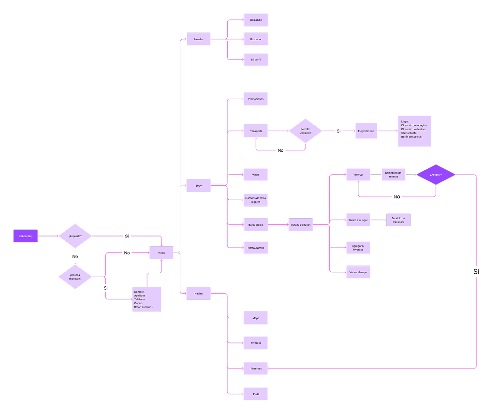
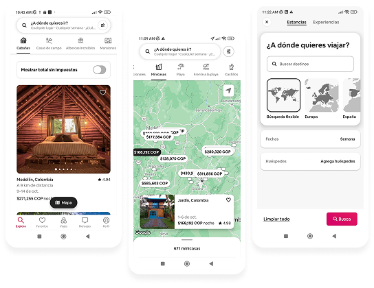
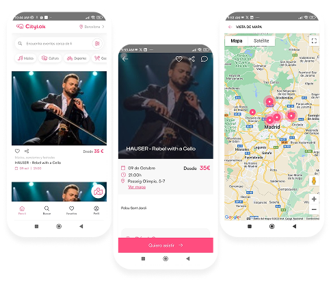
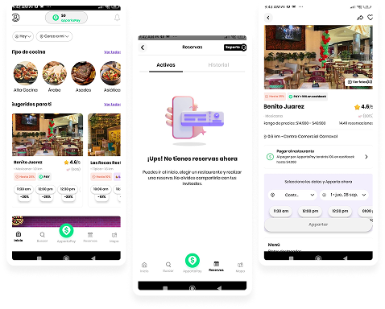
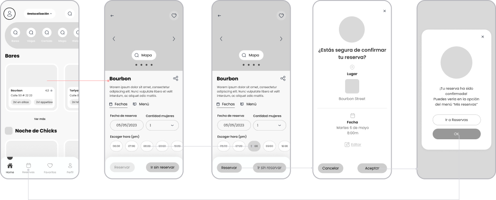
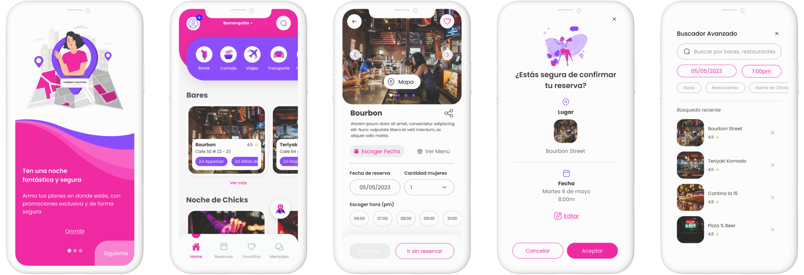

End-to-end product design for a mobile application — from user research and wireframes through usability testing, final UI, and design system handoff.
Overview
Chicks is a mobile application project where I ran the full product design cycle independently: from initial user research through final UI and design system documentation. The project was structured to demonstrate the complete discipline — not just visual output, but the thinking that leads to it.
Every major decision in the UI traces back to a research finding or a usability test result. This case study documents that traceability.
Approach
Research → Benchmark → Architecture → Wireframe → Test → Iterate → Final UI → Design System. Each stage informed the next.
01 — Features
Before defining the architecture, I mapped out the product's core capabilities from the user's perspective. These 12 features shaped every structural and design decision that followed.
1
See featured offers on the home page.
2
Search for destinations of interest and save them in my planning journal.
3
Search for destinations of interest and save them in my planning journal.
4
Find fascinating experiences to do in the city I'm visiting, based on my interests such as food, art, culture, music, animals, etc.
5
Secure car rentals and ground transportation at the destination I will visit to feel safer.
6
Secure car rentals and ground transportation at the destination I will visit to feel safer.
7
Find flights with attractive discounts and build travel packages that include experiences and are connected to ground transportation.
8
View and follow trips taken by my friends to see the options they chose and save them as favorites.
9
Share my trips, restaurants, transportation, and experiences chosen for my trip on social media.
10
Discover new destinations curated by travel experts to follow their recommendations when planning my trip.
11
Contact housing hosts to learn more about their profile and the reviews of their properties.
12
Find appealing restaurants by type of cuisine and read reviews written by diners.
02 — Information Architecture
With the 12 features defined, I built the complete information architecture — tracing every screen, decision point, and flow from onboarding through the core user journeys. This map was the foundation for all wireframing decisions that followed.

Full IA — onboarding, home, navigation, and core flows
03 — Benchmark
I analyzed three reference products to identify proven patterns, capability gaps, and interaction decisions worth adapting — or deliberately avoiding. These findings directly informed the first wireframes.
Airbnb

Good points
Geolocalization · Top menu for additional functions · Cards on searching localization
Pain points
The search doesn't tell me where I am right now.
Citylook

Good points
Geolocalization · Top menu for additional functions · Cards on searching localization · Map available · Reservation · In the product details you have the option to choose the booking time, making it faster.
Pain points
It can't be reserved.
Apparta

Good points
Geolocalization · Map available · Reservation system · Booking time selection directly from the product detail page.
Pain points
No social sharing features · Limited experience discovery beyond accommodation.
04 — White Frames
Before applying any visual decisions, I mapped out the core flows in low-fidelity wireframes. The focus at this stage was navigation architecture, content hierarchy, and interaction patterns — not aesthetics. Changes here cost nothing.

Low-fidelity wireframes — core reservation and navigation flows
05 — Final Prototype
The final UI applied a visual system built around the product's identity — bold, warm, and easy to navigate. Every structural decision from the wireframe phase carried through into the final screens, validated by the flows tested in prototype sessions.

High-fidelity final design — complete screen set